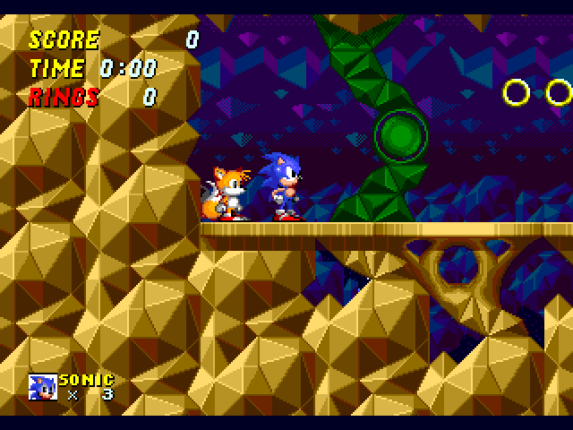
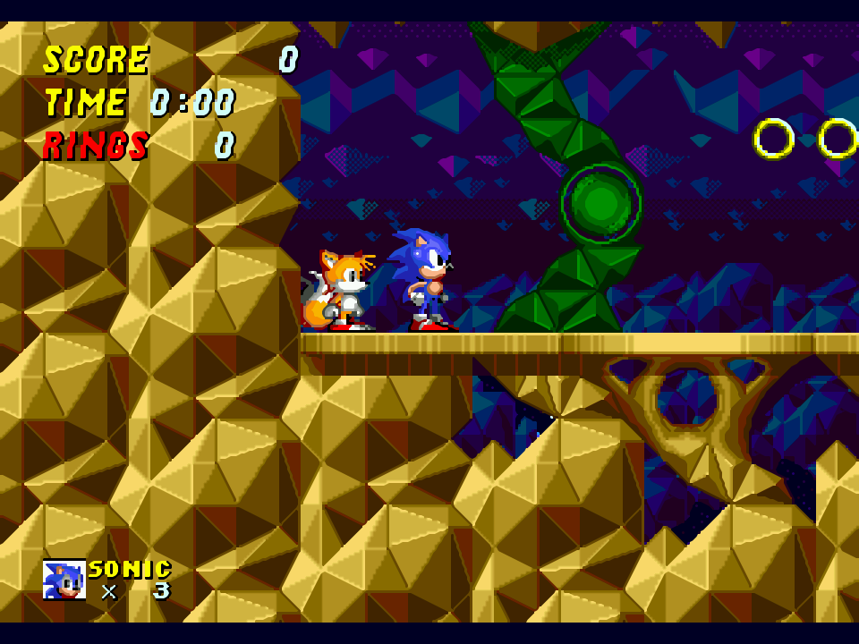
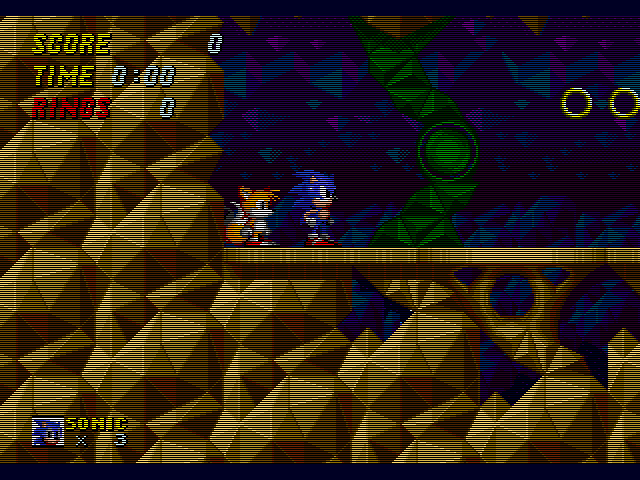
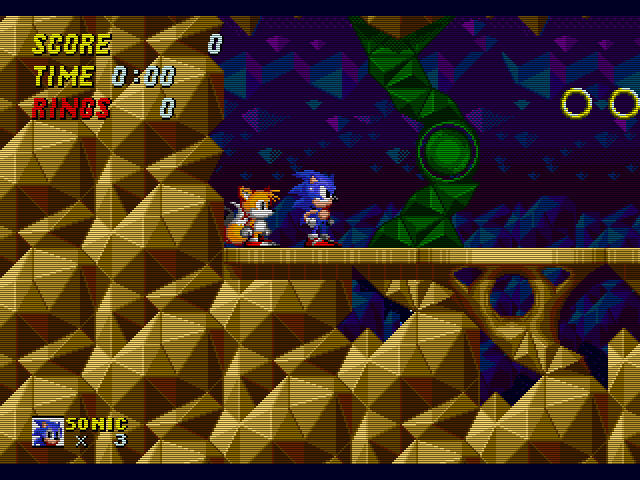

Gens/GS includes a wide assortment of rendering plugins. Two plugins, "Normal" and "Double", are built into the emulator, while the rest are external MDP plugins.
The "Normal" renderer is a simple 1x rendering plugin that blits
the original video image as-is without any modifications.
The "Double" renderer is a simple 2x rendering plugin that upscales
the original video image to twice its size using nearest-neighbor filtering.

"2xSaI" is a 2x rendering plugin designed by Kreed that scales and
interpolates the original image to provide a better-quality picture.
Blargg's NTSC fitler is a 2x rendering plugin that simulates the image seen on
a regular NTSC television set. Several different NTSC artifacting options are
available, including color bleed and tint. A configuration window is available
in the Plugins menu.
EPX is a 2x rendering plugin.
EPX Plus is a 2x rendering plugin. It is an improved version of EPX.
hq2x is a high-quality 2x magnification filter.
hq3x is a high-quality 3x magnification filter.

hq4x is a high-quality 4x magnification filter.
Interpolated is a 2x rendering plugin that interpolates missing pixels by
using the average values of its neighboring pixels.
Interpolated Scanline is a 2x rendering plugin that interpolates missing pixels
by using the average values of its neighboring pixels. It also provides a
scanline effect.
Interpolated 25% Scanline is a 2x rendering plugin that interpolates missing
pixels by using the average values of its neighboring pixels. It also provides
a 25% scanline effect.
Interpolated 50% Scanline is a 2x rendering plugin that interpolates missing
pixels by using the average values of its neighboring pixels. It also provides
a 50% scanline effect.
Scale2x is a 2x rendering plugin that increases the size of the original image
without interpolating pixels and blurring the images.
Scale3x is a 3x rendering plugin that increases the size of the original image
without interpolating pixels and blurring the images.
Scale4x is a 4x rendering plugin that increases the size of the original image
without interpolating pixels and blurring the images.
Scanline is a 2x rendering plugin that applies a scanline effect to the image.

25% Scanline is a 2x rendering plugin that applies a 25% scanline effect to the image.
50% Scanline is a 2x rendering plugin that applies a 50% scanline effect to the image.

Super "2xSaI" is an improved version of 2xSaI.
Super "Eagle" is an improved version of 2xSaI.